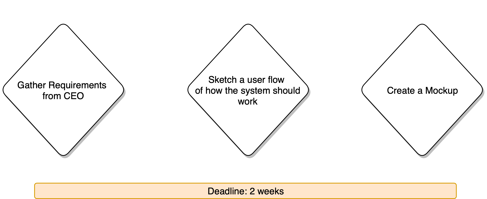
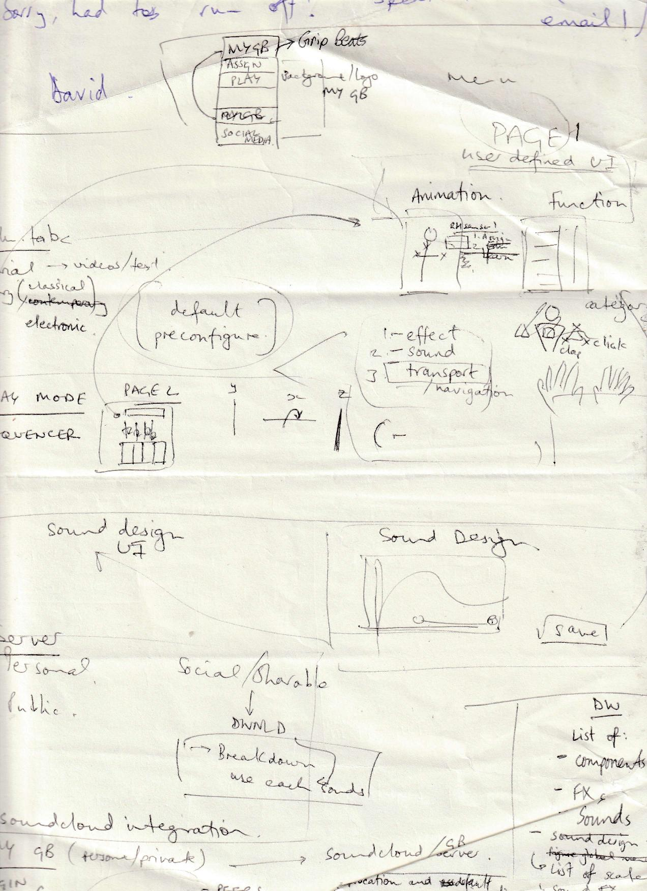
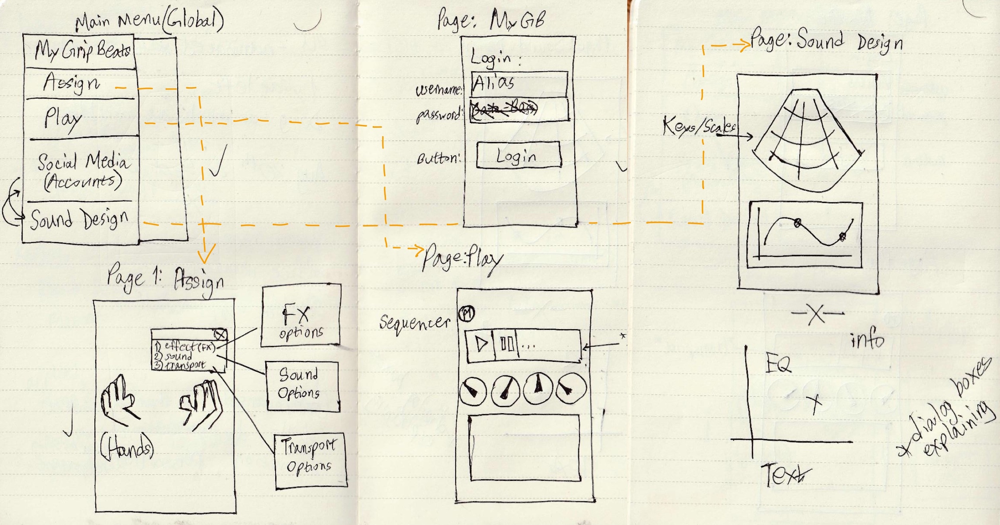
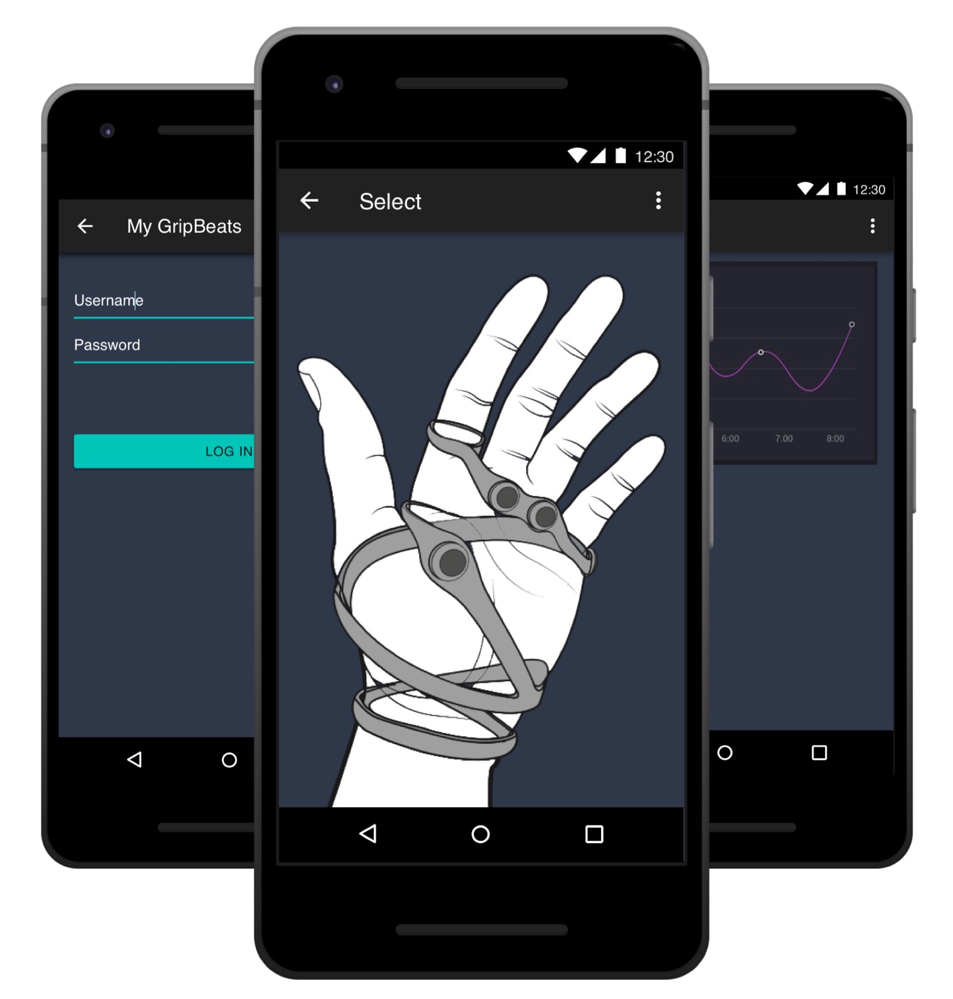
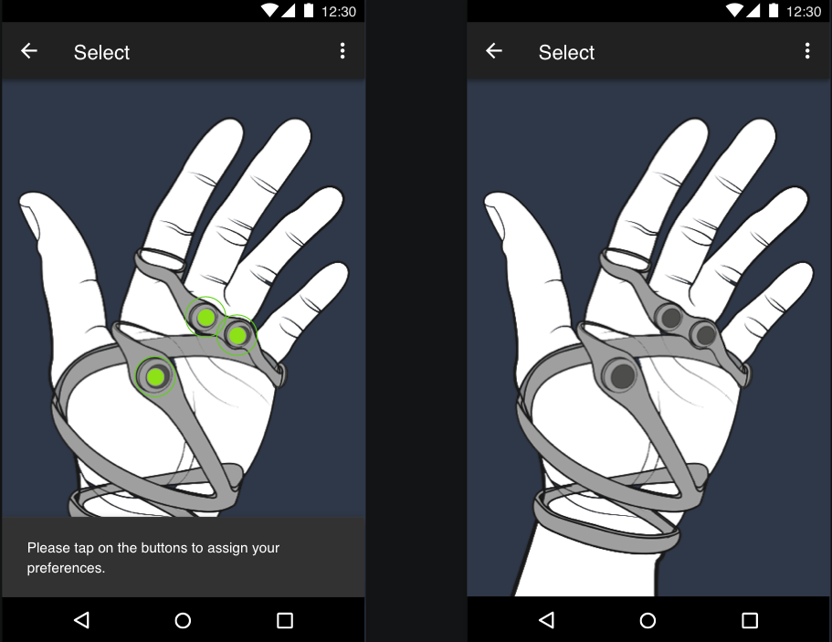

GripBeats® Android App
01: Problem and Process
Design and implement a MVP prototype which allows users to create a profile, and assign different sounds (of various instruments such as drums or guitars) to the physical buttons on the wearable device.
An informal brain-storming session was used to gather the initial requirements as it allowed us to share ideas and adapt them as we went along.
02: Flows
Sketches were then made to understand possible flows of users using the system.
A user should be able to play different sounds and compose a custom track if they desire. They can assign a different instrument, as only three can be set at any given time, from the 'Assign' tab and carry on composing.
They will be able to change the pitch and scales of the sound and also change FX effects from the 'Sound Design' tab.
03: Mockup
 The message will only show up if the user taps on any visible area apart from the buttons. e.g the white areas. It will disappear once user taps anywhere on the screen again.